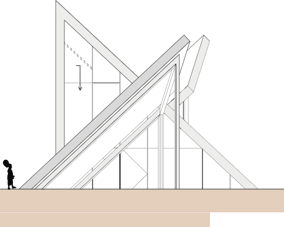

De Binckhorst
2011 / The Hague / Housing / 2000 m²
The Dutch pavillion designed for the World Expo in Yeosu, Korea. The building depicts Holland under sea level, by a 6 meter deep void with streaming water lining the walls. In the middle and island arises with three small structures, used as exhibi- tion space. Not only can the whole structure be used as a foundation for future develop- ment, but building underground combined with the cooling effect of the water provides a pleasant climate for visitors. The walls are made of 50mm glas with a relief molten into it, this makes the falling water more of a spectacle and increases the evaporation rate.
